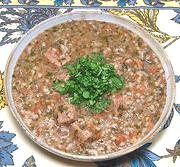

|
Sour Beef StewR. Georgia - Kharcho | ||||
| Makes: Effort: Sched: DoAhead: |
5 # *** 3 hrs Yes |
This moderately sour stew has only a modest amount of beef, but is spectacularly high in flavor. It can also be made with other meats, or with chicken, turkey or goose. | |||
|
1-1/2 1-1/2 5 2 ------ 1/2 1 1/4 1/2 ------ 2-1/4 1-1/2 ------ 1/2 1/2 a/r ------ |
# # oz cl --- T t t T --- oz oz --- c c --- |
Beef, lean (1) Tomatoes Onions Garlic -- Spices Coriander seed Marigold petals (2) Chili Powder (3) Salt -- Herbs Cilantro (4) Parsley, flat -------- Walnut meats (opt) Rice, long grain Sour Plum (5) -- Garnish Cilantro |
This recipe can be made with or without walnuts, depending on preference. The photo example was made with walnuts, and with tamarind paste for sourness. PREP - (1-1/2 hr )
|